IVR 2.0 — Use Case & Feature Tracker
All 13 use cases from the IVR routing design — from a user's point of view — with their current build status, the audio that plays at each step, and the feature-level completeness of every dependency. Click a use case to expand. Play the audio to hear what the user actually hears.
In-app Call CTA
A CSP user opens a ticket in the CSP App and taps the Call CTA to reach the customer. The dialer opens with the Wiom IVR Masked number pre-filled. The user dials, and the call is bridged seamlessly — no PIN prompt, no waiting. The customer's phone shows the Wiom IVR Masked number, never the CSP user's personal mobile.

What the user does and sees
- CSP user opens a Restore / Install / Pickup ticket card in the CSP App.
- Taps the Call CTA.
- Phone dialer opens with the Wiom IVR Masked number pre-filled.
- Taps dial.
- Customer's phone shows the call coming from the Wiom IVR Masked number — not from the CSP user's personal mobile.
Scenarios — and how each is handled
sim_inventory). Continues as UC 03 or UC 04. No user-visible failure.
Behind the scenes — tech detail
- Exotel App Bazaar Flow ✓
- API 1 (Table 1 fetch) ✓
- API 4 / Webhook (call logging) ✓
- CSP App integrations ✓
- Remote Config kill switch ✓
Mirror of UC 01 for the customer side. Customer opens their ticket in the Customer App and taps the Call CTA to reach the CSP. Bridged via Table 1 hit. CSP user's phone shows the Wiom IVR Masked number.
- Customer (in Customer App)Opens a ticket card.
- CustomerTaps the Call CTA.
- Customer App ↔ IVRApp asks for the number; IVR returns the masked number.
- CustomerDialler opens with the masked number; user taps dial.
- IVRBridges to the CSP user via Table 1.
- CSP user's phoneRings showing the Wiom IVR Masked number; CSP picks up; call connects.
- Exotel App Bazaar Flow ✓
- API 1 ✓
- API 4 / Webhook ✓
- Customer App integrations ✓
- Remote Config ✓
- Dialer auto-open (Customer App) — In Progress (UX nicety)
Dialer-initiated callbacks — recognised caller
A CSP user previously called a customer via the in-app CTA. Later they want to re-call — they tap the Wiom IVR Masked number entry in their phone's call log. Table 1's TTL has expired so the cached mapping is gone. The IVR recognises their FROM (registered SIM or sim_inventory) and finds exactly one active ticket — bridges directly.
- CSP userOpens their phone's call log; finds the Wiom IVR Masked number entry; taps dial.
- IVR (API 1)Looks up FROM in Table 1 → cache miss. Falls back to PIN registry by FROM.
- IVRIdentification chain — first hit: FROM matches a row in
sim_inventory→ returns theuser_id. Finds exactly 1 active ticket for that CSP → directly returns the customer's mobile as the bridge target. - IVRBridges to the customer — no PIN prompt needed.
- Customer's phoneRings; picks up; call connects.
- API 1 ✓ · API 2 (user identification) ✓ · API 4 webhook ✓
- "All Recorded Voices" (covers fallback if no active ticket) ✓
Same as UC 03 but the CSP has 2 or more active tickets — the IVR can't tell which customer they want to reach. It asks for the 6-digit PIN. The CSP reads the PIN from the relevant ticket card in the CSP App and enters it on the dialler keypad. The PIN identifies the ticket and the bridge fires.
- CSP userTaps the Wiom IVR Masked number entry in their call log.
- IVRFROM recognised but 2+ active tickets → can't auto-resolve.
- IVR (audio prompt)Asks the caller to enter the 6-digit PIN.▶ Audio: "Ask for PIN"Played when IVR needs the caller to enter their PIN to disambiguate the ticket.
- CSP userOpens the relevant ticket in the CSP App, reads the PIN from the card, enters it on the dialler keypad.
- IVR (API 3)Looks up the PIN in Table 2; finds the customer mobile.
- IVRBridges to the customer.
- API 1 ✓ · API 2 ✓ · API 3 (PIN lookup) ✓ · API 4 ✓
- PIN visible on CSP App ticket card ✓
- All Recorded Voices ✓
A customer rang the CSP earlier (UC 02). The CSP missed it. Now the CSP dials back the masked number from their missed-call entry. FROM is recognised, single active ticket — direct bridge.
- CSP userSees a missed call from the Wiom IVR Masked number; taps to call back.
- IVRTable 1 cache miss. Identification chain — first hit: FROM in
sim_inventory→ returnsuser_id. 1 active ticket → direct bridge. - IVRBridges to the customer.
- API 1 ✓ · API 2 ✓ · API 4 ✓
- Missed-call PN to CSP ✓ (also drives this callback path)
Same as UC 05 but CSP has 2+ active tickets. PIN required.
- CSP userDials back from the missed-call entry.
- IVRFROM recognised, 2+ active tickets.
- IVRPlays the PIN prompt.▶ Audio: "Ask for PIN"
- CSP userReads the PIN from the CSP App ticket card; enters it.
- IVRBridges to the customer.
- API 1 ✓ · API 2 ✓ · API 3 ✓ · API 4 ✓ · Recorded voices ✓
- PIN visible on CSP App ✓
A customer called the CSP earlier via UC 02. They want to call again — they redial the masked number from their call log. Their FROM is recognised (it's the registered mobile on the ticket), they have 1 active ticket, direct bridge.
- CustomerRedials the Wiom IVR Masked number from their call log.
- IVRTable 1 cache miss. Identification chain runs: sim_inventory (no) → Customer API (yes — returns the
customer_id). 1 active ticket for that customer → direct bridge. - IVRBridges to the CSP user.
- API 1 ✓ · API 2 ✓ · API 4 ✓
Rare — customer has 2+ open tickets (e.g., Restore + Pickup). PIN required.
- CustomerRedials the Wiom IVR Masked number.
- IVRFROM recognised, 2+ active tickets.
- IVRPlays the PIN prompt.▶ Audio: "Ask for PIN"
- CustomerReads the PIN from the SMS sent at ticket creation, or from the ticket card in the Customer App; enters it.
- IVRBridges to the CSP.
- API 1 ✓ · API 2 ✓ · API 3 ✓ · API 4 ✓ · Recorded voices ✓
- PIN SMS to customer ✓ · PIN visible on Customer App ✓
The CSP tried to call the customer (UC 01) but the customer didn't pick up. The customer sees a missed call from the Wiom IVR Masked number on their phone. They tap to call back. FROM is recognised, single active ticket → direct bridge.
- Customer's phoneShows missed call from Wiom IVR Masked number.
- CustomerTaps to call back.
- IVRFROM recognised, 1 active ticket → bridges to CSP.
- API 1 ✓ · API 2 ✓ · API 4 ✓
- Missed-call PN to Customer ✓ Live — customer receives the alert when CSP's call wasn't picked.
Customer with multi-ticket, calls back after missing CSP's call. PIN required.
- CustomerCalls back from missed-call entry.
- IVRFROM recognised, 2+ active tickets.
- IVRPlays the PIN prompt.▶ Audio: "Ask for PIN"
- CustomerReads the PIN from the SMS or Customer App; enters it.
- IVRBridges to the right CSP.
- API 1 ✓ · API 2 ✓ · API 3 ✓ · API 4 ✓ · Recorded voices ✓
- PIN SMS to customer ✓
- Missed-call PN to Customer ✓ Live — customer receives the alert when CSP's call wasn't picked.
Unknown caller — unregistered SIM
A customer borrows a relative's phone (their own is unreachable). The masked number is on the SMS they received at ticket creation. They dial it. The IVR doesn't recognise the FROM, asks for the PIN; they read it from the same SMS and enter it.
- CustomerFrom an unregistered SIM, dials the Wiom IVR Masked number that was sent in their SMS.
- IVRTable 1 miss. Identification chain runs: sim_inventory (no) → Customer API (no, since the borrowed SIM isn't on the customer record) → Booking API (no). Caller is unknown.
- IVRPlays the PIN prompt.▶ Audio: "Ask for PIN"
- CustomerReads the PIN from the SMS on their own phone; enters it on the borrowed phone's keypad.
- IVR (API 3)Looks up PIN → finds the CSP mobile.
- IVRBridges to the CSP.
- API 1 ✓ · API 2 ✓ · API 3 ✓ · API 4 ✓ · Recorded voices ✓
- PIN SMS to customer ✓ (load-bearing — customer can't proceed without the SMS)
A CSP user is on the field using a different SIM (own SIM out of battery, signal issues). They dial the masked number from a non-registered SIM. FROM is unknown, PIN required. The CSP reads the PIN either from the CSP App ticket card or from the SMS sent at ticket allocation, and enters it on the keypad.
- CSP userDials the Wiom IVR Masked number from an unregistered SIM.
- IVRTable 1 miss. Identification chain runs all three steps (sim_inventory → Customer API → Booking API) and all miss. Caller is unknown.
- IVRPlays the PIN prompt.▶ Audio: "Ask for PIN"
- CSP userOpens the relevant ticket in the CSP App on their primary phone; reads the PIN; enters it on the keypad of the unregistered-SIM phone.
- IVRBridges to the customer.
- API 1 ✓ · API 2 ✓ · API 3 ✓ · API 4 ✓ · Recorded voices ✓
- PIN visible on CSP App ✓
- PIN SMS to CSP ✓ Live — CSP can read the PIN from SMS on the unregistered-SIM phone or any phone with their registered number.
A CSP user can't take the call (signal, busy, away). They forward the SMS (which has the masked number reference + the PIN + the ticket type + ticket ID) to a colleague — or alternatively screenshot the ticket card. The colleague dials and enters the PIN.
- CSP userForwards the PIN SMS they received from Wiom (it carries the PIN, ticket type, and ticket ID) — or screenshots the ticket card from the CSP App — and sends it to a colleague via WhatsApp / SMS.
- ColleagueReceives the forward; dials the masked number from their own phone.
- IVRTable 1 miss. Identification chain runs and all three steps miss (colleague's phone is in none of sim_inventory, Customer API, or Booking API). Caller is unknown.
- IVRPlays the PIN prompt.▶ Audio: "Ask for PIN"
- ColleagueReads the PIN from the forwarded message; enters it on the keypad.
- IVRBridges to the customer.
- API 1 ✓ · API 2 ✓ · API 3 ✓ · API 4 ✓ · Recorded voices ✓
- PIN visible on CSP App ✓ (CSP can screenshot or copy)
- PIN SMS to CSP ✓ Live — the SMS itself is the natural artefact to forward; carries PIN + ticket type + ticket ID.
Edge-case audio (no active ticket)
These audios are tied to the Wiom Call Center / Trust Line numbers (e.g. 8880322222 and the trust-line number), not the IVR Masked number. The IVR Masked number is strictly for customer ↔ partner interaction on an active ticket. When a customer or CSP calls in to the call center / trust line and the IVR cannot find an active ticket against their mobile, it plays the appropriate dead-end message and ends the call.
The 13 use cases collapse into four distinct routing paths. Each path has its own logic; below is one flowchart per path showing exactly what the IVR does on the call.
Master flow — how the IVR routes any incoming call
When a call arrives at the IVR (via the masked number), the very first thing it does is a Table 1 cache lookup. From there, the four paths branch out.

Path 1 — In-app CTA happy path
The user taps the in-app Call CTA on their ticket. The app pre-asks the IVR for the number to dial. The IVR writes a short-TTL mapping into Table 1 and returns the masked number. The user dials it; the IVR recognises the mapping and bridges instantly.

Path 2 — Recognised caller, single active ticket
Table 1 has expired. The IVR runs the identification chain to figure out who's calling. The first step that hits (sim_inventory, Customer API, or Booking API) gives the IVR enough to look up active tickets for the caller. If there's exactly one — bridge directly, no PIN needed.

Audio prompts in this flow
Note: the "no active ticket" audios are tied to the Wiom Call Center / Trust Line, not to the IVR Masked number. All 13 UCs assume an active ticket exists; the 0-ticket case isn't a UC branch here.
Path 3 — Recognised caller, multiple active tickets → PIN
The IVR plays the "ask for PIN" audio. The caller reads the PIN from their ticket (in-app card for CSP, SMS or in-app for customer) and enters it. The PIN itself identifies the ticket; the IVR looks up the counterparty's mobile and bridges. Retry policy: on a wrong PIN, the caller is prompted one more time; if the second attempt is also wrong, the call ends. On a timeout (no input), the caller is re-prompted up to three times before the call ends.

Audio prompts in this flow
Path 4 — Unknown caller → PIN
The caller's mobile fails all three identification lookups — IVR doesn't know who they are. The PIN serves double duty here: it both authenticates the caller (they wouldn't have it unless someone authorised gave it to them) and identifies the ticket they want.

Audio prompts in this flow
Compressed view of how the 13 use cases branch out, mirroring the design page. Click any UC to jump to its detail in the Use Cases tab.
- Calling from inside the app (in-app Call CTA)
- Calling from the dialer (call log, saved contact, missed-call entry)
- Caller identified — FROM is registered / in sim_inventory
- CSP dials back on a CSP-initiated masked number
- CSP dials back on a customer-initiated masked number
- Customer dials back on a customer-initiated masked number
- Customer dials back on a CSP-initiated masked number (after missed call)
- Caller not identified — FROM is an unregistered SIM
- Caller identified — FROM is registered / in sim_inventory
Per-feature build status sourced from the IVR Completeness task list. The use-case-level statuses in the previous tab are derived from this table.
| Task | Description | Platform | Status | Notes |
|---|---|---|---|---|
| Exotel App Bazaar Flow | End-to-end App Bazaar call flow | Exotel | Completed | — |
| API 1 | Table 1 lookup at inbound call | IVR Service | Completed | — |
| API 2 | User identification chain: sim_inventory (returns user_id) → Customer API (returns customer_id) → Booking API (returns account_id) | IVR Service | Completed | Customer API deserialization fix landed 24 Jun |
| API 3 | Table 2 PIN-to-counterparty lookup | IVR Service | Completed | — |
| API 4 / Webhook | Call disposition logging | IVR Service | Completed | — |
| Customer App integration | Initiate-call from all three services + masked number on dialer | Customer App | Completed | — |
| CSP App integration | Initiate-call from all three services + masked number on dialer | CSP / Technician App | Completed | — |
| Remote Config kill switch | Customer App + CSP App | Both apps | Completed | — |
| All Recorded Voices | Voice prompts played by IVR (ask-PIN, wrong PIN, limit reached, no PIN, no active ticket, call not picked) | Exotel | Completed | List shared |
| PIN Communication — PIN on Customer App | PIN visible on Customer App ticket card | Customer App | Completed | — |
| PIN Communication — PIN on CSP App | PIN visible on CSP App ticket card | CSP / Technician App | Completed | — |
| PIN Communication — SMS to Customer | SMS trigger to customer with PIN | SMS | Completed | — |
| PIN Communication — SMS to CSP | SMS trigger to CSP with PIN, ticket type, and ticket ID | SMS | Completed | Live — carries csp_pin + ticket_type + execution_candidate_id. |
| DLT Whitelisting | Wiom number whitelisted on DLT | SMS / Compliance | In Progress | Maanas to sign Number Ownership contract; ETA TBD |
| Missed-call PN to CSP | PN to CSP when customer's call wasn't picked | CSP App | Completed | Earlier bug fixed — event was missing on CSP CT |
| Missed-call PN to Customer | PN to customer when CSP's call wasn't picked | Customer App | Completed | Trigger fires and PN lands on customer devices. End-to-end working. |
| Bug — PIN deallocation on P74 | PIN not getting deallocated when booking removed after P74 hit | IVR Service | Fixed 24 Jun | issues/807 |
| Bug — Registered Number change | SIM Inventory not updating on number change | IVR Service | Fixed 24 Jun | issues/807 |
| Bug — 12 single-ticket cases not bridging | Customer Service deserialization failure ("Active" String vs int) | IVR Service | Fixed 24 Jun | issues/846 |
| Bug — call_dnp_missed_call_alert event | Event not getting triggered | IVR Service | Fixed 24 Jun | issues/830 |
| Dialer Open | Directly open the dialer on Call CTA tap (one fewer step) | Customer App | In Progress | UX improvement, not functional gating |
All seven voice prompts the IVR can play on a call. Hit play on any clip to hear what the user actually hears.
Out-of-call messages — push notifications fired after a missed call, and SMS sent on ticket creation. These are the discovery / authentication channels that feed the dial-back and unknown-caller use cases.
Push notifications — missed call alerts
CSP missed-call notification ✓ Live
Customer missed-call notification ✓ Live
SMS — PIN delivery on ticket creation
Customer PIN-sharing SMS ✓ Live
यदि आप रजिस्टर्ड नंबर के अलावा किसी अन्य नंबर से कॉल करते हैं, तो IVR में {{ Event.customer_pin }} दर्ज करके सत्यापन करें।
Issue Type: {{ Event.ticket_type }}
- Wiom
Variables:
customer_pin = the customer's 6-digit PIN · ticket_type = Install / Restore / Pickup.CSP PIN-sharing SMS ✓ Live
यदि आप रजिस्टर्ड नंबर के अलावा किसी अन्य नंबर से कॉल करते हैं, तो IVR में {{ Event.csp_pin }} दर्ज करके बात करें।
Issue Type: {{ Event.ticket_type }}
Ticket ID: {{ Event.execution_candidate_id }}
- Wiom
Variables:
csp_pin = the CSP-side 6-digit PIN · ticket_type = Install / Restore / Pickup · execution_candidate_id = the unique ticket identifier.